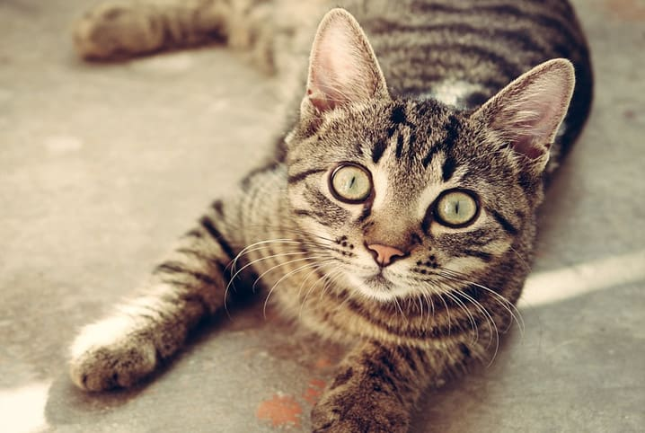
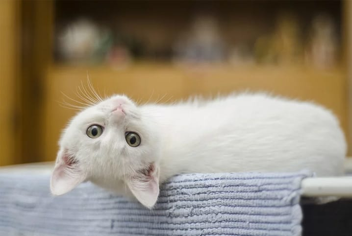

1. Comedouros e bebedouros
Gatos se alimentam várias vezes ao dia. Por isso, como primeiro mandamento dos cuidados com gatos, certifique-se sempre de que o animalzinho tem água fresca para beber. Os potinhos de ração e de água devem ficar longe da bandeja sanitária e ligeiramente separados um do outro.
Outra dica é optar sempre por recipientes laváveis. Além disso, procure um potinho com tamanho suficiente para que o gato coma e beba sem encostar seus bigodes nas bordas, pois isso irrita o bichano. Ademais, evite potes de plástico. Comedouros de aço inoxidável são os mais recomendados, além de não quebram se caírem de locais altos.
Quanto ao bebedouro, você pode optar pelo pote convencional seguindo as instruções anteriores. Porém, para estimular seu gatinho a se hidratar mais vezes, é recomendável que tenha um bebedouro fonte. Gatos adoram água corrente.
2. Alimentação recomendada
Antes do seu primeiro gato chegar em casa, é importante que a alimentação escolhida para ser oferecida já esteja preparada. Tente oferecer inicialmente o alimento que já era servido para ele antes de chegar na sua casa. Por fim, analise se essa comidinha pode ser mantida ou se deve entrar no processo de transição.
Para trocar a ração de gato ou mudar seus hábitos alimentares, saiba que é errado trocar a alimentação de uma só vez. Há grandes chances do felino recusar a comidinha. Confira a forma correta de se fazer esse processo:
- Misture 80% do alimento anterior e 20% do novo;
- Conforme forem passando os dias, reduza a quantidade do alimento anterior, adicionando cada vez mais o alimento novo,
- Conforme forem passando os dias, reduza a quantidade do alimento anterior, adicionando cada vez mais o alimento novo,
Antes de escolher a comida para o bichano, é importante que sua composição seja rica em ingredientes frescos. Além disso, gatos são animais carnívoros. Por isso, evite alimentos com base de cereais. Por fim, não se esqueça de escolher alimentos de acordo com a idade, a raça e o porte do seu pet, principalmente se for um gato filhote.
3. Caminha
Quanto à hora do descanso, muitos gatos terão suas preferências de local pela casa de acordo com sua personalidade. Você deve estar pensando: “É meu primeiro gato. Como vou saber a preferência dele?” Normalmente, os felinos preferem lugares cobertos e altos, onde se sintam seguros e consigam observar tudo ao seu redor.

Quanto à hora do descanso, muitos gatos terão suas preferências de local pela casa de acordo com sua personalidade. Você deve estar pensando: “É meu primeiro gato. Como vou saber a preferência dele?” Normalmente, os felinos preferem lugares cobertos e altos, onde se sintam seguros e consigam observar tudo ao seu redor.
4. Arranhadores
Arranhadores são itens essenciais numa casa onde vive um gato. Caso você não ofereça arranhadores pela casa, a tendência é o gatinho procurar afiar suas unhas no seu sofá, estante, cortina, etc.
Arranhadores são itens essenciais numa casa onde vive um gato. Caso você não ofereça arranhadores pela casa, a tendência é o gatinho procurar afiar suas unhas no seu sofá, estante, cortina, etc.
Caso seu gato não queira utilizar o arranhador, você pode optar por colocar alguma erva de gato de sua preferência ou uma comidinha para atraí-lo até o acessório. Lembrando que cortar as unhas dos gatos ou remover suas falanges não é uma opção. Além de ser ilegal, isso prejudica a saúde do seu gatinho.
5. Caixa de areia
Existem vários tipos de bandejas sanitárias por aí. Mas sua escolha dependerá mais do gato do que do tutor. Os felinos tendem a preferir bandejas descobertas. Mas você pode tentar optar pela bandeja fechada, que, além de confortável, evita a saída de odores e areia.
Lembre-se sempre de que as bandejas precisam ser baixas para facilitar a entrada e a saída do felino. Além disso, elas devem estar localizadas em lugares distantes dos comedouros.
9. Vacinação e castração
A saúde do gato é o tópico mais importante de todos em relação aos cuidados. Mantenha a vacinação do felino em dia. Caso você tenha encontrado seu pet numa feira de adoção de gatos, provavelmente, o animalzinho já tenha tomado alguma vacina, além de já ter sido castrado.
Diferentemente do que muitos tutores pensam, a castração não deve ser feita apenas em gatos adultos, mas, sim, também em filhotes a partir dos 6 meses de vida. Além de prevenir o animal de sofrer de diversos problemas de saúde, o procedimento também auxilia no controle populacional de gatos.